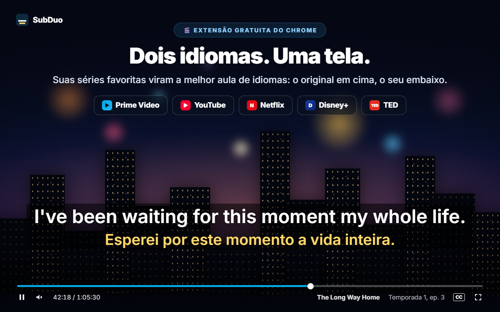
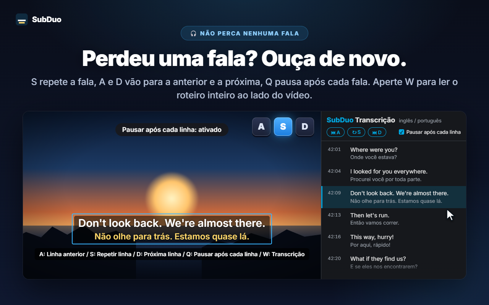
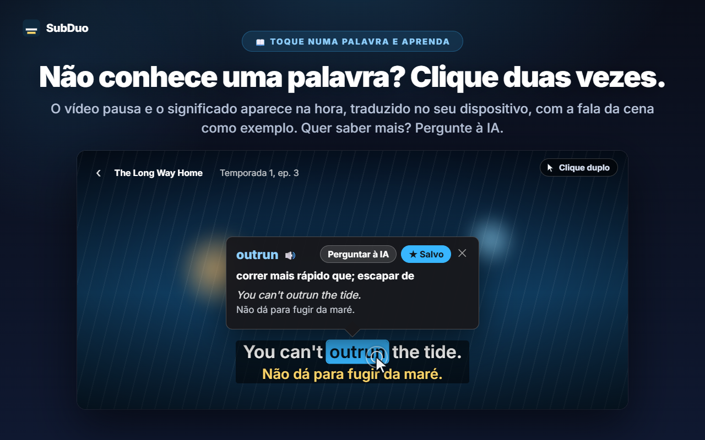
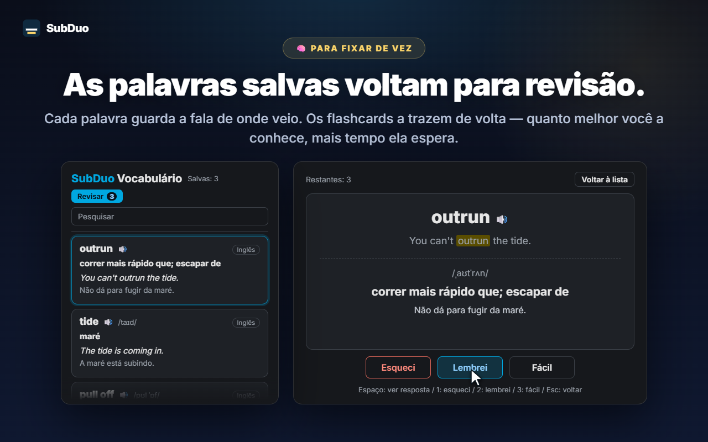

Quaisquer dois idiomas de legenda
Todas as faixas que o site oferece são detectadas quando o vídeo começa, incluindo as legendas automáticas do YouTube. Escolha um idioma por linha ou oculte uma delas.
O SubDuo mostra dois idiomas de legenda ao mesmo tempo: o original em cima, o seu embaixo. Dê um clique duplo em uma palavra para ver o significado, repita uma linha com uma só tecla e guarde o que aprendeu em um vocabulário integrado.
Usa as legendas que cada site já oferece · Sem conta · As legendas ficam no seu navegador
Os players de streaming mostram um idioma de legenda por vez. O SubDuo adiciona um segundo — e as ferramentas para aprender com ele.
Telas da extensão, mostradas no seu idioma.

Escolha duas das faixas de legenda que o título oferece: o original em cima, o seu embaixo. Arraste as legendas para onde quiser, gire a roda do mouse sobre uma linha para mudar o tamanho e use o clique direito para mudar cores, transparência ou desfoque.

Pressione S para repetir a linha, A e D para voltar ou avançar, e Q para pausar automaticamente após cada linha. Pressione W para abrir a transcrição no painel lateral do Chrome — os dois idiomas, linha por linha — e clique em qualquer item para ir até ele.

O vídeo pausa e um cartão mostra o significado na hora, traduzido no seu dispositivo pelo tradutor integrado do Chrome, com a própria fala da cena como exemplo. Alt+arrastar seleciona uma expressão. Toque em “Perguntar à IA” para ver o significado no contexto, a pronúncia e uma frase de exemplo.

Cada palavra salva guarda a fala de onde veio. Pesquise e filtre seu vocabulário, ouça a pronúncia e revise com cartões: quanto melhor você conhece uma palavra, mais tempo ela demora para voltar.
Sem conta, sem telas de configuração. Instale e dê o play.
Instale o SubDuo pela Chrome Web Store e dê play em um vídeo no Prime Video, YouTube, Netflix, Disney+ ou TED.
Clique no ícone do SubDuo e escolha um idioma de legenda para a linha de cima e outro para a de baixo. Só aparecem as faixas que o título oferece.
Clique duas vezes nas palavras para consultá-las, pressione A, S ou D para repetir linhas e abra seu vocabulário pelo popup.
Feita para quem aprende assistindo — e quer as legendas fora do caminho até precisar delas.
Todas as faixas que o site oferece são detectadas quando o vídeo começa, incluindo as legendas automáticas do YouTube. Escolha um idioma por linha ou oculte uma delas.
Clique duplo ou Alt+clique em uma palavra, ou Alt+arrastar sobre uma expressão. A reprodução pausa e a tradução aparece no vídeo, feita no seu dispositivo.
O significado no contexto, a pronúncia e uma frase de exemplo, no seu idioma de exibição. Até 20 explicações por dia, grátis.
Salve palavras com um clique, pesquise, filtre por idioma e ouça com 🔊. Os cartões espaçam as palavras que você já conhece.
A para a linha anterior, S para repetir, D para a próxima. Q pausa após cada linha. Desfoque uma linha para se testar e passe o mouse sobre ela para conferir.
Todas as linhas nos dois idiomas ao lado do vídeo. A linha atual fica destacada; clique em qualquer item para ir até ele. Pressione W para abrir.
Arraste para mover, role para redimensionar uma linha, use as setas para ajustes finos e alinhe à esquerda, ao centro ou à direita. Clique direito para cor, transparência e desfoque de cada linha.
Legendas grandes no YouTube, discretas na Netflix: as configurações são salvas por site e sincronizadas pelo seu Chrome.
Menus, traduções e explicações da IA usam o idioma de exibição que você escolher, que pode ser diferente do idioma do Chrome.
O SubDuo lê os arquivos de legenda que cada site já envia ao seu navegador e os desenha ali mesmo. A única coisa que ele envia é uma expressão sobre a qual você decide perguntar à IA, junto com a linha de legenda dela.
As legendas são processadas e desenhadas no seu navegador. Suas configurações, seu vocabulário e seu histórico de exibição não são enviados ao desenvolvedor. As palavras são traduzidas no seu dispositivo pelo tradutor integrado do Chrome.
Quando você toca em “Perguntar à IA”, a expressão selecionada, a linha de legenda dela e a outra linha na tela, os códigos de idioma e um identificador aleatório do dispositivo (para o limite diário) vão para o servidor do SubDuo, que pede a explicação à OpenAI. Seu endereço IP é processado para operar o serviço.
Não há cadastro de nenhum tipo. A extensão não tem publicidade nem ferramentas de análise.
“storage” para configurações e vocabulário, “scripting” para reconectar as abas abertas após atualizações, “sidePanel” para a transcrição e acesso apenas aos cinco sites compatíveis.
Instale pela Chrome Web Store em segundos